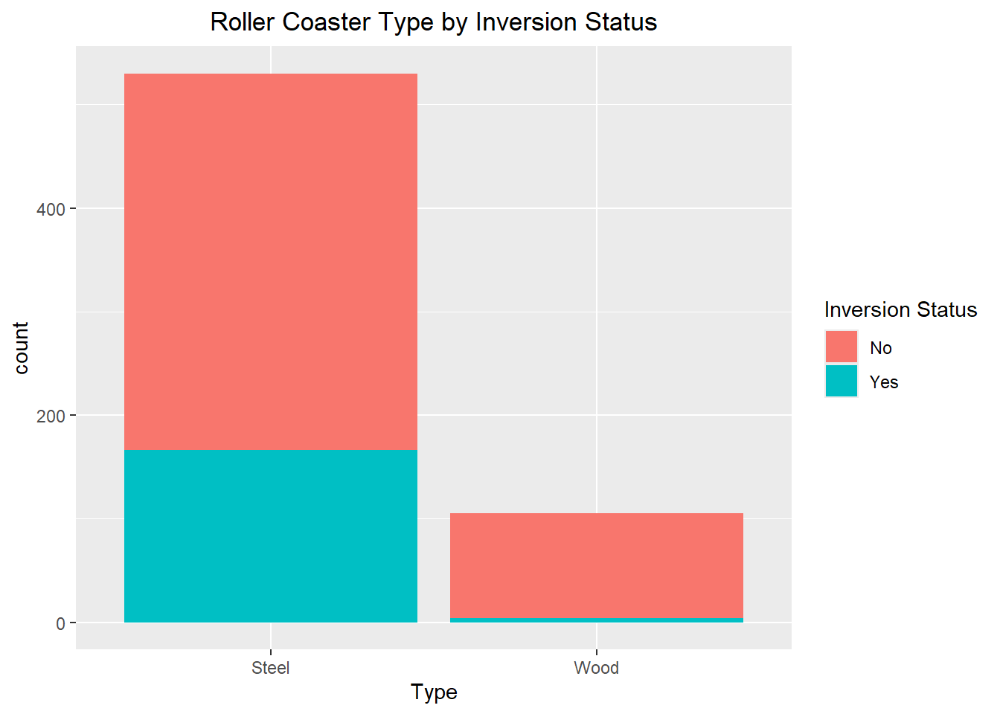
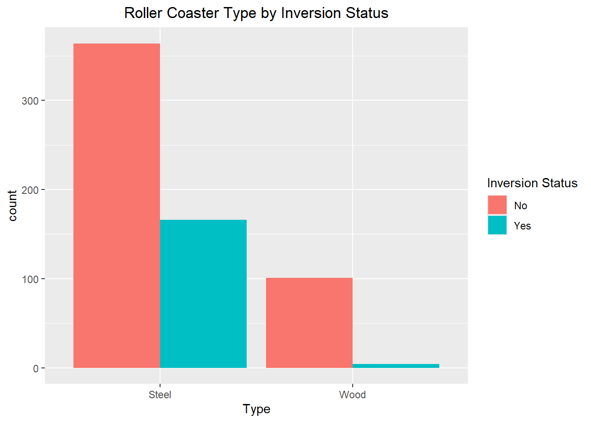
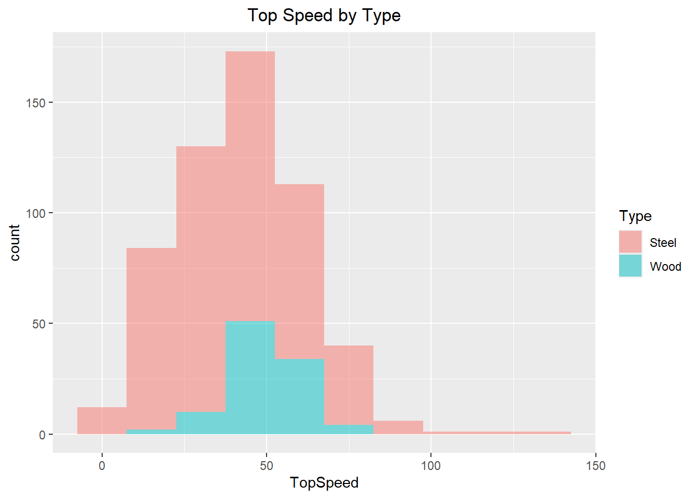
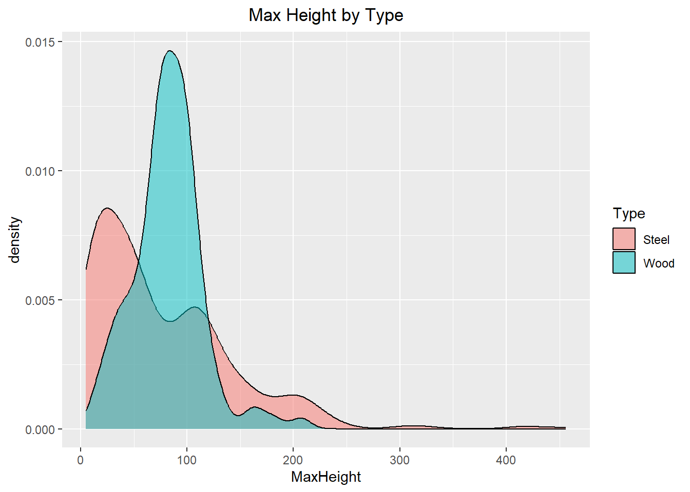
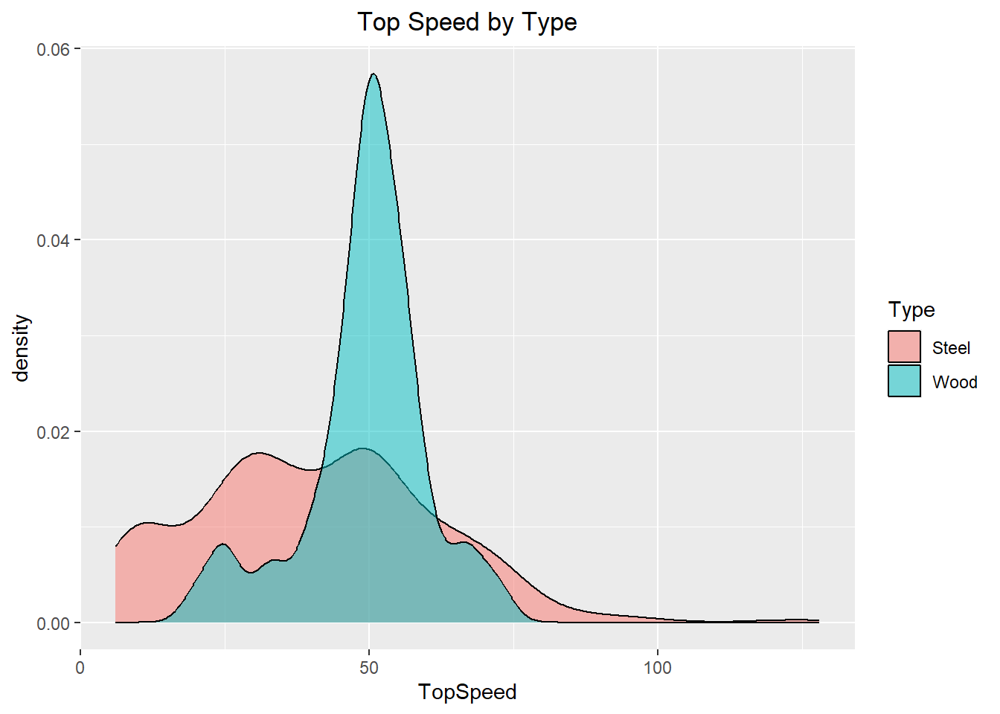
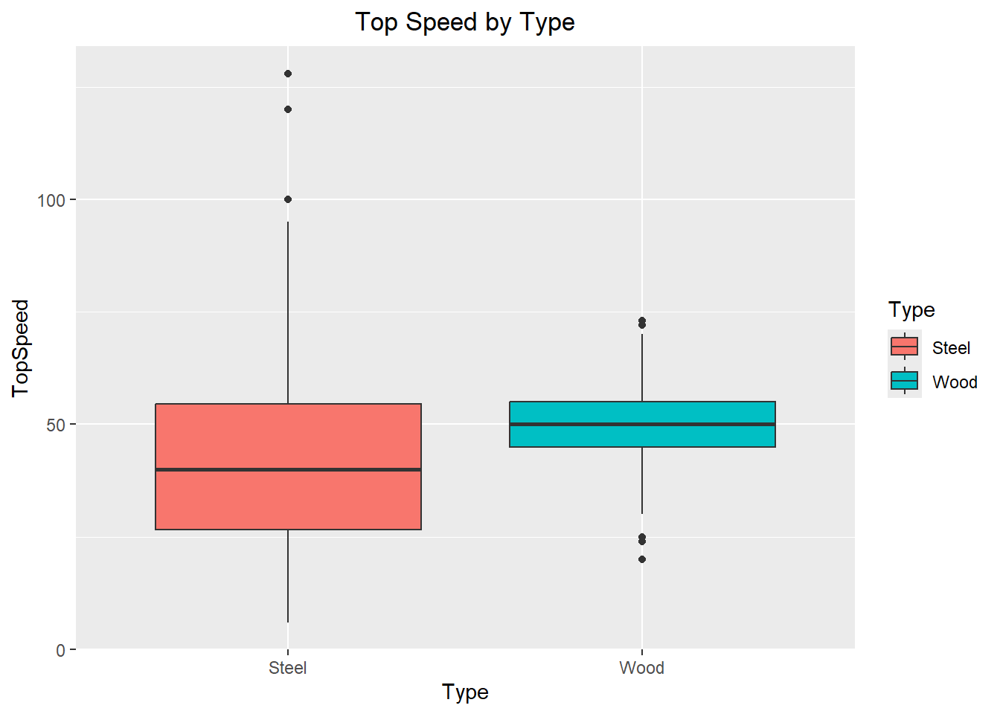
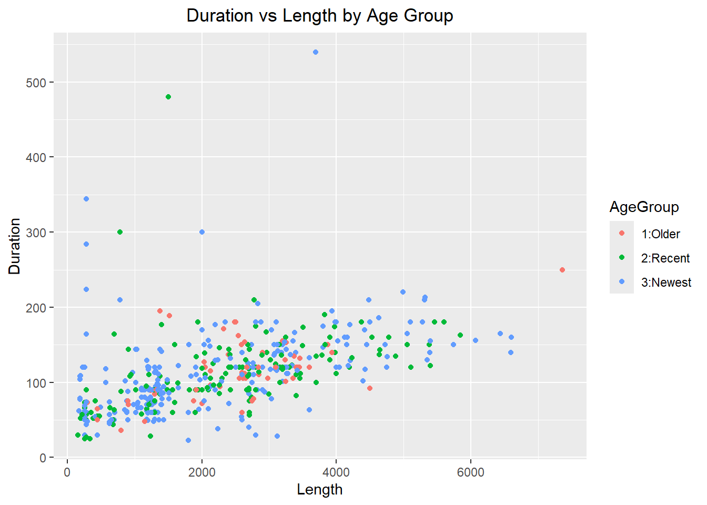
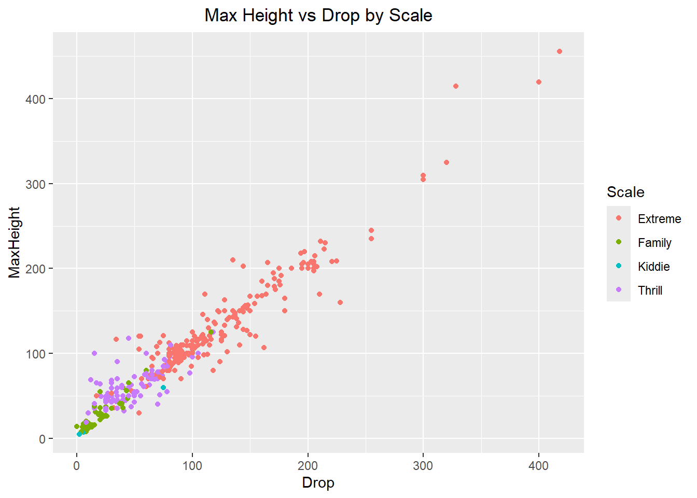
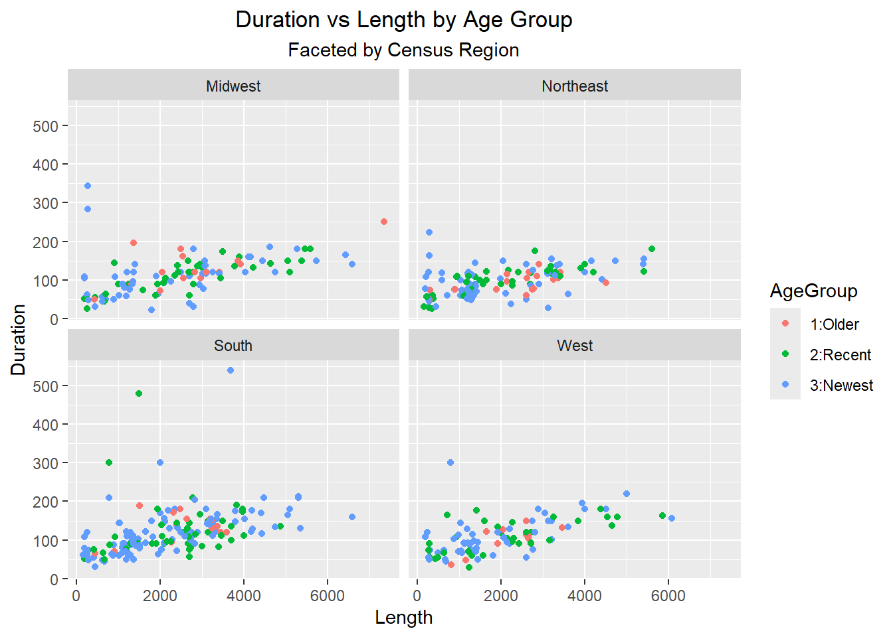
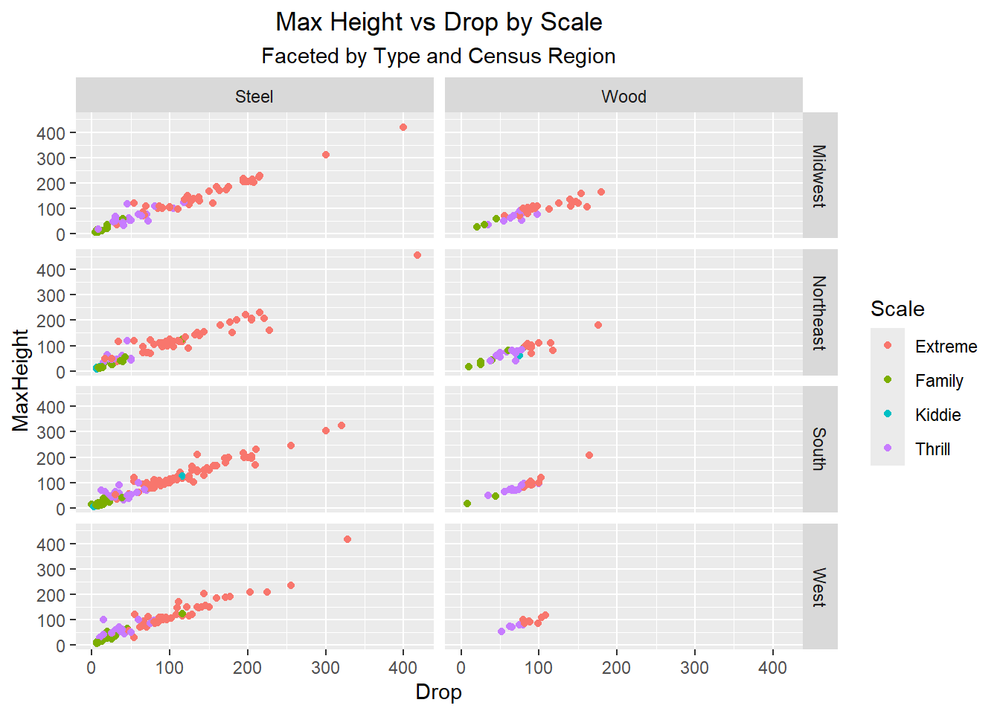

RFKey <- "27554db1fa15488a995b7935d17bdf94" # R.Friedman API key for newsapi.org
APIData <- GET(paste0("https://newsapi.org/v2/everything?q=SpaceX&from=2026-06-01&language=en&pageSize=50&apiKey=", RFKey)) # Gets data on topic "SpaceX" from 6/1/2026 onward.HW #4
Task 1 - Querying an API and a Tidy-Style Function
- Use GET() from the httr package to return information about a topic that you are interested in that has been in the news lately (store the result as an R object).
- Parse what is returned and find your way to the data frame that has the actual article information in it.
parsed <- fromJSON(rawToChar(APIData$content))
head(parsed$articles) # this is the data frame with information for the articles source.id source.name author
1 <NA> Gizmodo.com Kyle Torpey
2 <NA> Gizmodo.com Bruce Gil
3 <NA> Gizmodo.com Ece Yildirim
4 the-verge The Verge Nilay Patel
5 the-verge The Verge Stevie Bonifield
6 the-verge The Verge TC. Sottek
title
1 Crypto Platforms Sold Users on SpaceX IPO Access. The Tokenized Stocks Never Arrived
2 SpaceX’s IPO Could Make Some Trump Administration Officials Even Richer
3 Sen. Elizabeth Warren Makes Hail Mary Plea to Delay SpaceX IPO
4 Elon Musk is steamrolling Wall Street to become a trillionaire
5 Elon Musk is the world’s first trillionaire
6 The world’s first trillionaire is a killer
description
1 Crypto platforms may not be the best options for getting IPO allocations.
2 Several Trump administration officials held millions in SpaceX and xAI equity ahead of the company’s planned massive IPO.
3 The IPO's net result could be "disastrous," Warren said.
4 Today on Decoder, I’m talking to Ryan Mac, a technology reporter at The New York Times and coauthor of the excellent book Character Limit: How Elon Musk Destroyed Twitter, which came out in 2024. I can’t recommend it enough. I wanted to have Ryan on the show…
5 Elon Musk's net worth has passed the trillion-dollar mark after SpaceX's IPO. His net worth, which was hovering around $800 billion before the IPO, includes the value of his 4.8 billion shares in SpaceX, along with his wealth from his other companies, like Te…
6 Elon Musk's SpaceX IPO will probably make him the richest person to ever walk the planet. And while his mountain of horrible personal conduct could fill multiple books, one fact in particular stands out: A year ago, Musk's actions directly led to the deaths o…
url
1 https://gizmodo.com/crypto-platforms-sold-users-on-spacex-ipo-access-the-tokenized-stocks-never-arrived-2000771535
2 https://gizmodo.com/spacexs-ipo-could-make-some-trump-administration-officials-even-richer-2000767020
3 https://gizmodo.com/sen-elizabeth-warren-makes-hail-mary-plea-to-delay-spacex-ipo-2000770190
4 https://www.theverge.com/podcast/942586/elon-musk-spacex-ipo-x-xai-index-funds
5 https://www.theverge.com/ai-artificial-intelligence/948409/elon-musk-trillionaire-spacex-ipo
6 https://www.theverge.com/tech/949259/the-worlds-first-trillionaire-is-a-killer
urlToImage
1 https://gizmodo.com/app/uploads/2026/02/Binance-France-Crypto-Home-Invasion-1200x675.jpg
2 https://gizmodo.com/app/uploads/2026/05/europa-clipper-lifts-off-with-fire-and-smoke-1200x675.jpg
3 https://gizmodo.com/app/uploads/2024/10/GettyImages-2158701295.jpg
4 https://platform.theverge.com/wp-content/uploads/sites/2/2026/06/VRG_DCD_0604_Musk_IPO_AParkin.jpg?quality=90&strip=all&crop=0%2C10.732984293194%2C100%2C78.534031413613&w=1200
5 https://platform.theverge.com/wp-content/uploads/sites/2/2026/06/STKE012_SPACEX_IPO_2026_D.jpg?quality=90&strip=all&crop=0%2C10.732984293194%2C100%2C78.534031413613&w=1200
6 https://platform.theverge.com/wp-content/uploads/sites/2/2025/02/Musk_President_Trump_Portraits_K_Radtke.jpg?quality=90&strip=all&crop=0%2C10.732984293194%2C100%2C78.534031413613&w=1200
publishedAt
1 2026-06-14T09:00:56Z
2 2026-06-03T17:40:08Z
3 2026-06-10T22:10:33Z
4 2026-06-04T13:56:19Z
5 2026-06-12T16:24:39Z
6 2026-06-12T18:46:40Z
content
1 Some crypto users thought they had found a way into the hottest IPO in years through tokenized SpaceX stock offerings. Instead, users of Binance Wallet, Bybit, and Bitget Wallet were told that the to… [+6424 chars]
2 Elon Musk isnt the only person set to get richer when SpaceX goes public next week.\r\nAccording to a Bloomberg report, 10 Trump administration officials disclosed holding millions of dollars in stakes… [+3144 chars]
3 With just two days left before SpaceX begins trading on the Nasdaq, Senator Elizabeth Warren is asking the SEC to delay its IPO.\r\nIn a letter to SEC Chair Paul Atkins, Sen. Warren raised concerns abo… [+4306 chars]
4 <ul><li></li><li></li><li></li></ul>\r\nThe New York Times Ryan Mac on how the SpaceX IPO is shaping up to be the greatest Musk gambit yet.\r\nby\r\nNilay PatelClose\r\nPosts from this author will be added t… [+42386 chars]
5 <ul><li></li><li></li><li></li></ul>\r\n10 years after John D. Rockefeller became the worlds first billionaire.\r\n10 years after John D. Rockefeller became the worlds first billionaire.\r\nby\r\nStevie Boni… [+2707 chars]
6 <ul><li></li><li></li></ul>\r\nElon Musks empire of wealth is built on suffering.\r\nElon Musks empire of wealth is built on suffering.\r\nby\r\nTC SottekClose\r\nPosts from this author will be added to your d… [+7562 chars]str(parsed$articles) # here is the structure of the articles data frame'data.frame': 44 obs. of 8 variables:
$ source :'data.frame': 44 obs. of 2 variables:
..$ id : chr NA NA NA "the-verge" ...
..$ name: chr "Gizmodo.com" "Gizmodo.com" "Gizmodo.com" "The Verge" ...
$ author : chr "Kyle Torpey" "Bruce Gil" "Ece Yildirim" "Nilay Patel" ...
$ title : chr "Crypto Platforms Sold Users on SpaceX IPO Access. The Tokenized Stocks Never Arrived" "SpaceX’s IPO Could Make Some Trump Administration Officials Even Richer" "Sen. Elizabeth Warren Makes Hail Mary Plea to Delay SpaceX IPO" "Elon Musk is steamrolling Wall Street to become a trillionaire" ...
$ description: chr "Crypto platforms may not be the best options for getting IPO allocations." "Several Trump administration officials held millions in SpaceX and xAI equity ahead of the company’s planned massive IPO." "The IPO's net result could be \"disastrous,\" Warren said." "Today on Decoder, I’m talking to Ryan Mac, a technology reporter at The New York Times and coauthor of the exce"| __truncated__ ...
$ url : chr "https://gizmodo.com/crypto-platforms-sold-users-on-spacex-ipo-access-the-tokenized-stocks-never-arrived-2000771535" "https://gizmodo.com/spacexs-ipo-could-make-some-trump-administration-officials-even-richer-2000767020" "https://gizmodo.com/sen-elizabeth-warren-makes-hail-mary-plea-to-delay-spacex-ipo-2000770190" "https://www.theverge.com/podcast/942586/elon-musk-spacex-ipo-x-xai-index-funds" ...
$ urlToImage : chr "https://gizmodo.com/app/uploads/2026/02/Binance-France-Crypto-Home-Invasion-1200x675.jpg" "https://gizmodo.com/app/uploads/2026/05/europa-clipper-lifts-off-with-fire-and-smoke-1200x675.jpg" "https://gizmodo.com/app/uploads/2024/10/GettyImages-2158701295.jpg" "https://platform.theverge.com/wp-content/uploads/sites/2/2026/06/VRG_DCD_0604_Musk_IPO_AParkin.jpg?quality=90&s"| __truncated__ ...
$ publishedAt: chr "2026-06-14T09:00:56Z" "2026-06-03T17:40:08Z" "2026-06-10T22:10:33Z" "2026-06-04T13:56:19Z" ...
$ content : chr "Some crypto users thought they had found a way into the hottest IPO in years through tokenized SpaceX stock off"| __truncated__ "Elon Musk isnt the only person set to get richer when SpaceX goes public next week.\r\nAccording to a Bloomberg"| __truncated__ "With just two days left before SpaceX begins trading on the Nasdaq, Senator Elizabeth Warren is asking the SEC "| __truncated__ "<ul><li></li><li></li><li></li></ul>\r\nThe New York Times Ryan Mac on how the SpaceX IPO is shaping up to be t"| __truncated__ ...parsed$articles$content[1] # this is the actual text from the first article[1] "Some crypto users thought they had found a way into the hottest IPO in years through tokenized SpaceX stock offerings. Instead, users of Binance Wallet, Bybit, and Bitget Wallet were told that the to… [+6424 chars]"- Write a function that allows the user to easily query NewsAPI. The inputs are the title/subject to search for, a time period to search from (i.e. from that time until the present), and an API key.
NewsAPIQuery <- function (subject,TimePeriod, NewsAPIKey){
NewsURL <- paste0("https://newsapi.org/v2/everything?q=", subject,"&from=", TimePeriod, "&language=en&pageSize=50&apiKey=", NewsAPIKey) # creates the URL from the arguments
NewsData <- GET(NewsURL) # gets the API data
NewsParsed <- fromJSON(rawToChar(NewsData$content)) # convert content of API data into readable test
NewsParsed$articles # returns articles dataframe
}Testing function with search of “Disneyland” from “2026-06-08”.
head(NewsAPIQuery("Disneyland", "2026-06-08", RFKey)) source.id source.name author
1 <NA> The Atlantic Steve Martin
2 buzzfeed Buzzfeed Bella Arnold
3 <NA> Gizmodo.com Cheryl Eddy
4 <NA> /FILM staff@slashfilm.com (Jamie Jirak)
5 business-insider Business Insider Emily Pennington
6 <NA> Kotaku Garrett Martin
title
1 Disneyland With No People
2 I Am Screaming, Crying, And Throwing Up After Watching This Viral Video Showing How Much Disneyland Annual Passes Cost In 2003
3 ‘Widow’s Bay’ Has Already Entered the Awards Race
4 15 Best Disney Star Wars Characters, Ranked
5 I've been to all 63 US national parks. These 4 are my favorites — but these 3 didn't impress me much.
6 Inside The Big Revamp Of Disney’s Millennium Falcon Ride
description
1 My encounter with a giant of American photography
2 The highest-tier Disneyland annual pass cost just $225 in 2003. Today, the closest equivalent costs $1,899...a 744% increase.View Entire Post ›
3 The Apple TV horror comedy hasn't even finished airing its first season, but it's one of the most-nominated shows at the 2026 Television Critics Association Awards.
4 As divisive as the Disney era of Star Wars has been, it's also produced some terrific characters. Here's our ranking of the best ones.
5 After visiting all 63 national parks in the US, my favorites include Yosemite and Grand Teton. I think Gateway Arch is among the worst parks, though.
6 Millennium Falcon: Smugglers Run updates its tech while adding a new mission and lots of Grogu
url
1 https://www.theatlantic.com/magazine/2026/07/steve-martin-diane-arbus-disneyland/687319/
2 https://www.buzzfeed.com/bellaarnold/disneyland-prices-2003-vs-now
3 https://gizmodo.com/widows-bay-has-already-entered-the-awards-race-2000771372
4 https://www.slashfilm.com/2189480/star-wars-best-disney-characters-ranked/
5 https://www.businessinsider.com/best-and-worst-national-parks-traveler-who-visited-all-63-2026-6
6 https://kotaku.com/disney-millenium-falcon-star-wars-ride-smugglers-run-grogu-update-review-2000704075
urlToImage
1 https://cdn.theatlantic.com/thumbor/MBAWllQkQy4NzJ3eIKlIfGe0lFQ=/0x43:2000x1085/1200x625/media/img/2026/06/DIS_Viewfinder_ArbusDisney/original.jpg
2 https://img.buzzfeed.com/buzzfeed-static/static/2026-06/11/22/thumb/i0qRFRhJ0.jpg?crop=2999:1570;1,0%26downsize=1250:*
3 https://gizmodo.com/app/uploads/2026/05/WidowsBay_107_boat-1200x675.jpg
4 https://www.slashfilm.com/img/gallery/15-best-disney-star-wars-characters-ranked/l-intro-1780685086.jpg
5 https://i.insider.com/6a281daf208d75cc7b791b4b?width=1200&format=jpeg
6 https://kotaku.com/app/uploads/2026/06/disney_millennium_falcon_unreal_engine-1200x675.jpg
publishedAt
1 2026-06-11T13:00:00Z
2 2026-06-12T16:33:12Z
3 2026-06-12T20:00:51Z
4 2026-06-14T15:10:00Z
5 2026-06-09T14:06:45Z
6 2026-06-08T21:00:27Z
content
1 Photographs by Diane ArbusWhen I was 17, I worked at Fantasyland’s magic shop as a magician demonstrating Svengali decks, cups and balls, and the Incredible (their word) Shrinking Die. I loved workin… [+6258 chars]
2 by Bella ArnoldBuzzFeed\r\nBuzzFeed StaffI'm a Costa Rican-American writer covering all the impolite dinner party topics religion, politics, witches, identity, Da Pope, and the internet.
3 With just one episode left to go in its first season, Widow’s Bay has earned a dedicated fan base and racked up lots of critical love. That latter achievement has translated into the Apple TV+ show’s… [+4559 chars]
4 George Lucas' "Star Wars: Episode IV A New Hope" was released in 1977, and it didn't take long for it to launch one of the biggest media franchises in history. Currently, The Walt Disney Company ow… [+1518 chars]
5 After visiting all the national parks in the US, I have favorites and a few I'm in no rush to return to.Emily Pennington\r\n<ul><li>I've visited all of the US national parks. Of the 63, I have a few fa… [+6460 chars]
6 Video game and theme park design are two very different disciplines, but they have a lot in common. They share similar approaches to building worlds and turning narratives into interactive experience… [+8230 chars]Testing function with search of “Tokyo” from “2026-06-04”.
head(NewsAPIQuery("Tokyo", "2026-06-04", RFKey)) source.id source.name author
1 <NA> Blog.google Google Japan
2 business-insider Business Insider David Morris
3 <NA> NPR The Associated Press
4 <NA> Kotaku Ethan Gach
5 <NA> The New Yorker Hannah Goldfield
6 <NA> PetaPixel Jeff Austin
title
1 The future of learning in the AI age
2 I flew 12 hours in Singapore Airlines' first class. Here's what the experience is really like — and whether it's worth it.
3 Japan reactor restart sparks fresh fears over nuclear waste storage
4 Hideo Kojima Says He’s Not Interested In AI: ‘Maybe AI Could Create Art, But While I Live, I Don’t Think I’ll See It’
5 A World-Class Omakase in America’s Most Landlocked State
6 Twenty Years, One City: What Tokyo Taught Me About Patience and Glass
description
1 Ben Gomes, Google’s Chief Technologist for Learning and Sustainability, held a dialogue for the students of the University of Tokyo.
2 My long-haul flight from LA to Tokyo in Singapore Airlines' first-class cabin had more pros than cons in terms of seats, food, and overall value.
3 The reboot highlights a dire problem for the country's nuclear program. Japan is running out of space to store spent nuclear fuel and lacks plans for radioactive waste disposal.
4 The Death Stranding 2 directly recently appeared in an AI-generated promo for a new art exhibit
5 For the chef David Utterback, the sense that Omaha is underestimated is a source of both pride and torment. Hannah Goldfield reviews his restaurants, including Ota, Yoshitomo, Koji, and Shredder’s.
6 Most photographers I know are in constant motion. New cities, new continents, new visual problems to solve. There's truth in it. Unfamiliarity forces you to look. Familiarity gives you permission to stop. But there's another, less-discussed school of practice…
url
1 https://blog.google/products-and-platforms/products/education/future-learning-ai-era/
2 https://www.businessinsider.com/first-class-singapore-airlines-long-flight-pros-cons-worth-it-2026-6
3 https://www.npr.org/2026/06/11/g-s1-127439/japan-reactor-restart-sparks-fresh-fears-over-nuclear-waste-storage
4 https://kotaku.com/hideo-kojima-says-hes-not-interested-in-ai-maybe-ai-could-create-art-but-while-i-live-i-dont-think-ill-see-it-2000703473
5 https://www.newyorker.com/magazine/2026/06/15/a-world-class-omakase-in-americas-most-landlocked-state
6 https://petapixel.com/2026/06/06/twenty-years-one-city-what-tokyo-taught-me-about-patience-and-glass/
urlToImage
1 https://storage.googleapis.com/gweb-uniblog-publish-prod/images/386_Z8B0734_1.width-1300.jpg
2 https://i.insider.com/6a0f5f50b1025a62a5c85bb3?width=1200&format=jpeg
3 https://npr.brightspotcdn.com/dims3/default/strip/false/crop/8000x4500+0+0/resize/1400/quality/85/format/jpeg/?url=http%3A%2F%2Fnpr-brightspot.s3.amazonaws.com%2Fe0%2F1e%2F407e99c44b2bb907fa7fa2169daa%2Fap26127128314166.jpg
4 https://kotaku.com/app/uploads/2026/06/Kojima-1200x675.jpg
5 https://media.newyorker.com/photos/6a20384f0ebc148ad8c072f4/16:9/w_1280,c_limit/r49391.png
6 https://petapixel.com/assets/uploads/2026/06/Twenty-Years-One-City-What-Tokyo-Taught-Me-About-Patience-and-Glass.jpg
publishedAt
1 2026-06-09T10:00:00Z
2 2026-06-09T13:48:01Z
3 2026-06-11T13:02:43Z
4 2026-06-07T02:41:33Z
5 2026-06-08T10:00:00Z
6 2026-06-06T12:00:47Z
content
1 Recently, Ben Gomes, Googles Chief Technologist for Learning and Sustainability, visited Japan and held a special dialogue with President Teruo Fujii for the students of the University of Tokyo, focu… [+3640 chars]
2 One of the highlights of Singapore Airlines' first class was the comfortable lie-flat seat.David Morris\r\n<ul><li>I spent nearly 12 hours flying first class on a Singapore Airlines flight from LA to T… [+6984 chars]
3 KASHIWAZAKI, Japan Japan has resumed operations at the world's largest nuclear power plant to help the country meet huge electricity demands during a global oil crisis, but the reboot highlights a bi… [+6680 chars]
4 Last month, a generative AI version of Death Stranding 2 director Hideo Kojima appeared in a short promotional movie for a Prada art installation revolving around the famed game developer and movie d… [+2126 chars]
5 Many of the commercial strips in Omaha, a city of about half a million people, have the air of a nineties college town, with low-slung blocks of row houses punctuated by dive bars and cafés, thrift s… [+3494 chars]
6 Most photographers I know are in constant motion. New cities, new continents, new visual problems to solve. There’s truth in it. Unfamiliarity forces you to look. Familiarity gives you permission to … [+9550 chars]Task 2 - Summarizing Roller Coaster Data
- Read in the data. Confirm variable data types and identify factors
CoasterDataRaw <-read_csv("HW4DataFiles/635USrollercoasters.csv")Rows: 635 Columns: 21
── Column specification ────────────────────────────────────────────────────────
Delimiter: ","
chr (12): Coaster, Park, City, State, Census Region, AgeGroup, Scale, Type, ...
dbl (9): Year Opened, TopSpeed, MaxHeight, Drop, Length, Duration, # of Inv...
ℹ Use `spec()` to retrieve the full column specification for this data.
ℹ Specify the column types or set `show_col_types = FALSE` to quiet this message.CoasterDataRaw # A tibble: 635 × 21
Coaster Park City State `Census Region` `Year Opened` AgeGroup TopSpeed
<chr> <chr> <chr> <chr> <chr> <dbl> <chr> <dbl>
1 Adrenaline… Oaks… Port… Oreg… West 2018 3:Newest 45
2 Adventure … King… Mason Ohio Midwest 1991 2:Recent 35
3 Afterburn Caro… Char… Nort… South 1999 2:Recent 62
4 Aftershock Silv… Athol Idaho West 2008 3:Newest 65.6
5 Air Grover Busc… Tampa Flor… South 2010 3:Newest 22
6 Alpengeist Busc… Will… Virg… South 1997 2:Recent 67
7 Alpine Bob… Grea… Quee… New … Northeast 1998 2:Recent 35
8 American E… Six … Gurn… Illi… Midwest 1981 2:Recent 66
9 American T… Six … Eure… Miss… Midwest 2008 3:Newest 48
10 Anaconda King… Dosw… Virg… South 1991 2:Recent 50
# ℹ 625 more rows
# ℹ 13 more variables: MaxHeight <dbl>, Scale <chr>, Type <chr>, Design <chr>,
# Drop <dbl>, Length <dbl>, Duration <dbl>, `Inversions?` <chr>,
# `# of Inversions` <dbl>, Make <chr>, Latitude <dbl>, Longitude <dbl>,
# Boundary <chr>describe(CoasterDataRaw) # shows summary statistics on all variables in order to look for anything awry vars n mean sd median trimmed mad min
Coaster* 1 635 241.13 141.17 238.00 239.90 182.36 1.00
Park* 2 635 106.90 56.46 108.00 108.63 77.10 1.00
City* 3 635 85.79 51.50 83.00 85.92 69.68 1.00
State* 4 635 19.74 11.41 21.00 19.63 14.83 1.00
Census Region* 5 635 2.52 1.03 3.00 2.53 1.48 1.00
Year Opened 6 635 1999.42 18.20 2002.00 2002.40 13.34 1920.00
AgeGroup* 7 635 2.48 0.68 3.00 2.60 0.00 1.00
TopSpeed 8 561 42.24 19.37 45.00 42.17 20.76 6.00
MaxHeight 9 627 76.80 61.51 64.30 68.59 59.75 5.00
Scale* 10 635 2.12 1.21 2.00 2.03 1.48 1.00
Type* 11 635 1.17 0.37 1.00 1.08 0.00 1.00
Design* 12 635 3.96 0.60 4.00 4.00 0.00 1.00
Drop 13 507 77.18 63.63 70.00 68.93 63.75 0.00
Length 14 602 1938.41 1401.86 1490.00 1794.54 1570.07 48.00
Duration 15 569 106.04 52.75 101.00 101.53 43.00 20.00
Inversions?* 16 635 1.27 0.44 1.00 1.21 0.00 1.00
# of Inversions 17 635 0.92 1.77 0.00 0.49 0.00 0.00
Make* 18 599 27.86 17.84 27.00 28.02 25.20 1.00
Latitude 19 635 37.69 4.62 38.51 37.99 4.70 26.55
Longitude 20 635 -89.46 15.13 -84.31 -87.69 12.88 -122.94
Boundary* 21 635 19.77 10.56 18.00 19.34 13.34 1.00
max range skew kurtosis se
Coaster* 482.00 481.00 0.06 -1.20 5.60
Park* 197.00 196.00 -0.26 -1.25 2.24
City* 171.00 170.00 0.00 -1.29 2.04
State* 40.00 39.00 -0.04 -1.37 0.45
Census Region* 4.00 3.00 -0.12 -1.13 0.04
Year Opened 2020.00 100.00 -2.01 5.09 0.72
AgeGroup* 3.00 2.00 -0.96 -0.33 0.03
TopSpeed 128.00 122.00 0.21 0.38 0.82
MaxHeight 456.00 451.00 1.66 5.14 2.46
Scale* 4.00 3.00 0.62 -1.21 0.05
Type* 2.00 1.00 1.80 1.23 0.01
Design* 7.00 6.00 0.81 14.02 0.02
Drop 418.00 418.00 1.43 3.38 2.83
Length 7359.00 7311.00 0.83 0.29 57.14
Duration 540.00 520.00 2.30 13.10 2.21
Inversions?* 2.00 1.00 1.05 -0.91 0.02
# of Inversions 8.00 8.00 1.88 2.49 0.07
Make* 53.00 52.00 -0.04 -1.50 0.73
Latitude 47.92 21.37 -0.48 -0.47 0.18
Longitude -70.39 52.55 -0.95 -0.32 0.60
Boundary* 41.00 40.00 0.22 -0.95 0.42- Nothing unusual identified in looking at mean, min, and max with describe()
- Delete Latitude, Longitude, and Boundary variables (not needed for the assignment)
- Fix variable names
- Variables to be converted to factors: CensusRegion, AgeGroup, Scale, Type, Design, InversionsYN
CoasterDataCleaned <- CoasterDataRaw |>
select(-Latitude, -Longitude, -Boundary) # Remove undesired variables
colnames(CoasterDataCleaned) = c("Coaster", # Set variable names
"Park",
"City",
"State",
"CensusRegion",
"YearOpened",
"AgeGroup",
"TopSpeed",
"MaxHeight",
"Scale",
"Type",
"Design",
"Drop",
"Length",
"Duration",
"InversionsYN",
"NumInversions",
"Make")
CoasterDataCleaned <- CoasterDataCleaned |>
mutate(CensusRegion = factor(CensusRegion), # Convert select variables to factors
AgeGroup = factor(AgeGroup),
Scale = factor(Scale),
Type = factor(Type),
Design = factor(Design),
InversionsYN = factor(InversionsYN))
str(CoasterDataCleaned) # Confirm remaining variables and typestibble [635 × 18] (S3: tbl_df/tbl/data.frame)
$ Coaster : chr [1:635] "Adrenaline Peak" "Adventure Express" "Afterburn" "Aftershock" ...
$ Park : chr [1:635] "Oaks Amusement Park" "Kings Island" "Carowinds" "Silverwood Theme Park" ...
$ City : chr [1:635] "Portland" "Mason" "Charlotte" "Athol" ...
$ State : chr [1:635] "Oregon" "Ohio" "North Carolina" "Idaho" ...
$ CensusRegion : Factor w/ 4 levels "Midwest","Northeast",..: 4 1 3 4 3 3 2 1 1 3 ...
$ YearOpened : num [1:635] 2018 1991 1999 2008 2010 ...
$ AgeGroup : Factor w/ 3 levels "1:Older","2:Recent",..: 3 2 2 3 3 2 2 2 3 2 ...
$ TopSpeed : num [1:635] 45 35 62 65.6 22 67 35 66 48 50 ...
$ MaxHeight : num [1:635] 72 63 113 192 25 ...
$ Scale : Factor w/ 4 levels "Extreme","Family",..: 1 4 1 1 2 1 4 1 4 1 ...
$ Type : Factor w/ 2 levels "Steel","Wood": 1 1 1 1 1 1 1 2 2 1 ...
$ Design : Factor w/ 7 levels "Bobsled","Flying",..: 4 4 3 3 4 3 1 4 4 4 ...
$ Drop : num [1:635] 70 47 110 177 22.5 170 20 147 80 144 ...
$ Length : num [1:635] 1050 2963 2956 1204 628 ...
$ Duration : num [1:635] 66 140 167 92 47 190 100 143 110 110 ...
$ InversionsYN : Factor w/ 2 levels "No","Yes": 2 1 2 2 1 2 1 1 1 2 ...
$ NumInversions: num [1:635] 3 0 6 3 0 6 0 0 0 4 ...
$ Make : chr [1:635] "Gerstlauer Amusement Rides GmbH" "Arrow Dynamics" "Bolliger & Mabillard" "Vekoma" ...- Check for NA values in the data
colSums(is.na(CoasterDataCleaned)) Coaster Park City State CensusRegion
0 0 0 0 0
YearOpened AgeGroup TopSpeed MaxHeight Scale
0 0 74 8 0
Type Design Drop Length Duration
0 0 128 33 66
InversionsYN NumInversions Make
0 0 36 Note: There are no NA values for the factor variables.
Categorical Variables
- Use the table() function to create a one-way contingency table for Design
table(CoasterDataCleaned$Design)
Bobsled Flying Inverted Sit Down Stand Up Suspended Wing
4 9 42 560 4 7 9 Note: The most common design is ‘Sit Down’, with 560 out of the total 635 roller coasters in the data set.
- Use the table() function to create a two-way contingency table for Type by InversionsYN
table(CoasterDataCleaned$Type, CoasterDataCleaned$InversionsYN)
No Yes
Steel 364 166
Wood 101 4Note: Wood roller coasters with inversions are quite rare. The data set only identifies 4 out of the total 635.
- Use the table() function to create a three-way contingency table for AgeGroup by Scale by CensusRegion
table(CoasterDataCleaned$AgeGroup, CoasterDataCleaned$Scale, CoasterDataCleaned$CensusRegion), , = Midwest
Extreme Family Kiddie Thrill
1:Older 6 2 1 8
2:Recent 21 9 3 12
3:Newest 34 21 4 13
, , = Northeast
Extreme Family Kiddie Thrill
1:Older 3 7 3 8
2:Recent 22 13 3 10
3:Newest 37 29 1 20
, , = South
Extreme Family Kiddie Thrill
1:Older 5 4 0 8
2:Recent 38 9 0 10
3:Newest 49 55 6 39
, , = West
Extreme Family Kiddie Thrill
1:Older 3 0 1 10
2:Recent 24 9 3 4
3:Newest 27 20 3 18Note: Across the three factors of age, scale, and region, the most common combination is Newest/Family/South, with 55 of 635 coasters.
- Use the table() and filter() functions to create a conditional two-way table for Scale by CensusRegion among Newest (AgeGroup) roller coasters
FilteredData <- CoasterDataCleaned |>
filter(AgeGroup == "3:Newest")
table(FilteredData$Scale, FilteredData$CensusRegion)
Midwest Northeast South West
Extreme 34 37 49 27
Family 21 29 55 20
Kiddie 4 1 6 3
Thrill 13 20 39 18- Recreate the conditional two-way table above using a subsetted three-way table
table(CoasterDataCleaned$Scale, CoasterDataCleaned$CensusRegion, CoasterDataCleaned$AgeGroup)[ , , 3]
Midwest Northeast South West
Extreme 34 37 49 27
Family 21 29 55 20
Kiddie 4 1 6 3
Thrill 13 20 39 18Note: The South is the only region with more Family coasters than Extreme coasters.
- Create a two-way contingency table for Type by Design using group_by() and summarize() from dplyr. Then use pivot_wider() to make the result look more like the output from table().
CoasterDataCleaned |>
group_by(Type, Design) |>
summarize(count = n()) |>
pivot_wider(names_from = Type, values_from = count) |>
gt() |>
tab_header(
title = "Type by Design"
)`summarise()` has regrouped the output.
ℹ Summaries were computed grouped by Type and Design.
ℹ Output is grouped by Type.
ℹ Use `summarise(.groups = "drop_last")` to silence this message.
ℹ Use `summarise(.by = c(Type, Design))` for per-operation grouping
(`?dplyr::dplyr_by`) instead.| Type by Design | ||
| Design | Steel | Wood |
|---|---|---|
| Bobsled | 3 | 1 |
| Flying | 9 | NA |
| Inverted | 42 | NA |
| Sit Down | 456 | 104 |
| Stand Up | 4 | NA |
| Suspended | 7 | NA |
| Wing | 9 | NA |
Note: Wood coasters are almost exclusively Sit Down design.
- Create a stacked bar graph for Type by InversionsYN
ggplot(data = CoasterDataCleaned, aes(x = Type, fill = InversionsYN)) +
geom_bar()+
labs(x = "Type", title = "Roller Coaster Type by Inversion Status") +
scale_fill_discrete("Inversion Status") +
theme(plot.title = element_text(hjust = 0.5))
Note: Steel coasters with inversions are in the minority, but wood coasters with inversions are very rare.
- Recreate the above as a side-by-side bar graph
ggplot(data = CoasterDataCleaned, aes(x = Type, fill = InversionsYN)) +
geom_bar(position = "dodge") +
labs(x = "Type", title = "Roller Coaster Type by Inversion Status") +
scale_fill_discrete("Inversion Status") +
theme(plot.title = element_text(hjust = 0.5)) # Centers the title
Numeric Variables
- Find measures of center and spread for two numeric variables: TopSpeed and MaxHeight
CoasterDataCleaned |>
summarize(across(.cols = c(TopSpeed, MaxHeight),
list("mean" = ~ mean(.x, na.rm = TRUE),
"median" = ~ median(.x, na.rm = TRUE),
"var" = ~ var(.x, na.rm = TRUE),
"sd" = ~ sd(.x, na.rm = TRUE),
"IQR" = ~ IQR(.x, na.rm = TRUE)),
.names = "{.fn}_{.col}")) |> # creates names from the variable and the statistic (i.e. TopSpeed_mean)
pivot_longer(
everything(),
names_to = c("Statistic", "Variable"),
names_sep = "_") |> # breaks down into 10 rows w/ 3 columns: Statistic, Variable, and the value
pivot_wider(
names_from = Statistic, # uses Statistic to get new column names
values_from = value) |> # populates values from 'value'
gt() |>
fmt_number(decimals = 3) |> # rounds everything to 3 decimals
tab_header(
title = "Top Speed and Max Height",
subtitle = "Mean, Median, Var, SD, and IQR for all Roller Coasters"
)| Top Speed and Max Height | |||||
| Mean, Median, Var, SD, and IQR for all Roller Coasters | |||||
| Variable | mean | median | var | sd | IQR |
|---|---|---|---|---|---|
| TopSpeed | 42.245 | 45.000 | 375.217 | 19.371 | 26.500 |
| MaxHeight | 76.804 | 64.300 | 3,783.648 | 61.511 | 81.000 |
- Now find center and spread of TopSpeed and MaxHeight for Extreme Scale roller coasters
CoasterDataCleaned |>
filter(Scale == "Extreme") |>
summarize(across(.cols = c(TopSpeed, MaxHeight),
list("mean" = ~ mean(.x, na.rm = TRUE),
"median" = ~ median(.x, na.rm = TRUE),
"var" = ~ var(.x, na.rm = TRUE),
"sd" = ~ sd(.x, na.rm = TRUE),
"IQR" = ~ IQR(.x, na.rm = TRUE)),
.names = "{.fn}_{.col}")) |> # creates names from the variable and the statistic (i.e. TopSpeed_mean)
pivot_longer(
everything(),
names_to = c("Statistic", "Variable"),
names_sep = "_") |> # breaks down into 10 rows w/ 3 columns: Statistic, Variable, and the value
pivot_wider(
names_from = Statistic, # uses Statistic to get new column names
values_from = value) |> # populates values from 'value'
gt() |>
fmt_number(decimals = 3) |> # rounds everything to 3 decimals
tab_header(
title = "Top Speed and Max Height",
subtitle = "Mean, Median, Var, SD, and IQR for Extreme Roller Coasters"
)| Top Speed and Max Height | |||||
| Mean, Median, Var, SD, and IQR for Extreme Roller Coasters | |||||
| Variable | mean | median | var | sd | IQR |
|---|---|---|---|---|---|
| TopSpeed | 56.906 | 54.850 | 173.554 | 13.174 | 15.000 |
| MaxHeight | 126.496 | 110.000 | 3,469.518 | 58.903 | 55.000 |
Note: Compared to all roller coasters, Extreme roller coasters have higher mean TopSpeed (56.9 vs 42.2) and higher mean MaxHeight (126.5 vs 76.8).
- Find measures of center and spread of Length and Duration across AgeGroup
CoasterDataCleaned |>
group_by(AgeGroup) |>
summarize(across(.cols = c(Length, Duration),
list("mean" = ~ mean(.x, na.rm = TRUE),
"median" = ~ median(.x, na.rm = TRUE),
"var" = ~ var(.x, na.rm = TRUE),
"sd" = ~ sd(.x, na.rm = TRUE),
"IQR" = ~ IQR(.x, na.rm = TRUE)),
.names = "{.fn}_{.col}")) |> # creates names from the variable and the statistic (i.e. Length_mean)
pivot_longer(
cols = -AgeGroup, # exclude AgeGroup from the pivot
names_to = c("Statistic", "Variable"),
names_sep = "_") |> # breaks down into 30 rows w/ 4 columns: AgeGroup, Statistic, Variable, and the value
pivot_wider(
names_from = Statistic, # uses Statistic to get new column names
values_from = value) |> # populates values from 'value'
gt(groupname_col = "AgeGroup", rowname_col = "Variable") |> # organizes the Variable column by AgeGroup and removes the "Variable" title
fmt_number(decimals = 3) |> # rounds everything to 3 decimals
tab_header(
title = "Length and Duration Mean, Median, Var, SD, and IQR",
subtitle = "Stratified by Age Group"
)| Length and Duration Mean, Median, Var, SD, and IQR | |||||
| Stratified by Age Group | |||||
| mean | median | var | sd | IQR | |
|---|---|---|---|---|---|
| 1:Older | |||||
| Length | 2,269.149 | 2,520.000 | 1,540,187.903 | 1,241.043 | 1,605.500 |
| Duration | 110.462 | 110.000 | 1,713.315 | 41.392 | 54.000 |
| 2:Recent | |||||
| Length | 2,122.310 | 2,100.000 | 1,927,911.194 | 1,388.492 | 1,988.500 |
| Duration | 109.324 | 108.000 | 2,713.944 | 52.096 | 49.750 |
| 3:Newest | |||||
| Length | 1,774.484 | 1,300.000 | 2,012,191.324 | 1,418.517 | 1,973.100 |
| Duration | 103.286 | 94.500 | 3,034.728 | 55.088 | 61.750 |
- Find measures of center and spread of Drop and NumInversions across Type and CensusRegion
CoasterDataCleaned |>
group_by(Type, CensusRegion) |>
summarize(across(.cols = c(Drop, NumInversions),
list("mean" = ~ mean(.x, na.rm = TRUE),
"median" = ~ median(.x, na.rm = TRUE),
"var" = ~ var(.x, na.rm = TRUE),
"sd" = ~ sd(.x, na.rm = TRUE),
"IQR" = ~ IQR(.x, na.rm = TRUE)),
.names = "{.fn}_{.col}")) |> # creates names from the variable and the statistic (i.e. Drop_mean)
pivot_longer(
cols = -c(Type, CensusRegion), # exclude Type and CensusRegion from the pivot
names_to = c("Statistic", "Variable"),
names_sep = "_") |> # breaks down into 80 rows w/ 4 columns: CensusRegion, Statistic, Variable, and the value
pivot_wider(
names_from = Statistic, # uses Statistic to get new column names
values_from = value) |> # populates values from 'value'
gt(rowname_col = "CensusRegion") |> # organizes the CensusRegion column
fmt_number(decimals = 3) |> # rounds everything to 3 decimals
tab_header(
title = "Drop and Number of Inversions Mean, Median, Var, SD, and IQR",
subtitle = "Stratified by Type and Census Region"
)`summarise()` has regrouped the output.
ℹ Summaries were computed grouped by Type and CensusRegion.
ℹ Output is grouped by Type.
ℹ Use `summarise(.groups = "drop_last")` to silence this message.
ℹ Use `summarise(.by = c(Type, CensusRegion))` for per-operation grouping
(`?dplyr::dplyr_by`) instead.| Drop and Number of Inversions Mean, Median, Var, SD, and IQR | ||||||
| Stratified by Type and Census Region | ||||||
| Variable | mean | median | var | sd | IQR | |
|---|---|---|---|---|---|---|
| Steel | ||||||
| Midwest | Drop | 82.764 | 65.000 | 6,090.255 | 78.040 | 113.000 |
| Midwest | NumInversions | 1.100 | 0.000 | 3.505 | 1.872 | 2.000 |
| Northeast | Drop | 76.762 | 54.000 | 5,134.372 | 71.655 | 93.000 |
| Northeast | NumInversions | 1.095 | 0.000 | 3.799 | 1.949 | 2.000 |
| South | Drop | 73.074 | 60.000 | 4,016.407 | 63.375 | 90.000 |
| South | NumInversions | 1.061 | 0.000 | 3.535 | 1.880 | 2.000 |
| West | Drop | 75.779 | 61.000 | 4,501.976 | 67.097 | 84.500 |
| West | NumInversions | 1.130 | 0.000 | 3.497 | 1.870 | 2.000 |
| Wood | ||||||
| Midwest | Drop | 88.221 | 83.000 | 1,853.642 | 43.054 | 50.000 |
| Midwest | NumInversions | 0.176 | 0.000 | 0.392 | 0.626 | 0.000 |
| Northeast | Drop | 72.669 | 75.000 | 1,069.592 | 32.705 | 37.000 |
| Northeast | NumInversions | 0.000 | 0.000 | 0.000 | 0.000 | 0.000 |
| South | Drop | 77.958 | 80.100 | 764.907 | 27.657 | 24.200 |
| South | NumInversions | 0.037 | 0.000 | 0.037 | 0.192 | 0.000 |
| West | Drop | 81.692 | 80.500 | 283.268 | 16.831 | 18.250 |
| West | NumInversions | 0.000 | 0.000 | 0.000 | 0.000 | 0.000 |
- Create a correlation matrix between all of the numeric variables
NumericVars <- CoasterDataCleaned |>
select(where(is.numeric))
cor(NumericVars, use = "pairwise.complete.obs") |>
as.data.frame() |>
gt(rownames_to_stub = TRUE) |> # forces gt() to use rownames (omitted by default)
tab_header(
title = "Roller Coaster Data Numeric Variables",
subtitle = "Correlation Matrix"
) | Roller Coaster Data Numeric Variables | |||||||
| Correlation Matrix | |||||||
| YearOpened | TopSpeed | MaxHeight | Drop | Length | Duration | NumInversions | |
|---|---|---|---|---|---|---|---|
| YearOpened | 1.000000000 | 0.01392135 | 0.03884265 | 0.1044485 | -0.1344045 | -0.009649587 | 0.07559183 |
| TopSpeed | 0.013921347 | 1.00000000 | 0.90384443 | 0.8919588 | 0.7399484 | 0.316547964 | 0.39529838 |
| MaxHeight | 0.038842645 | 0.90384443 | 1.00000000 | 0.9639765 | 0.6777836 | 0.320254481 | 0.39858096 |
| Drop | 0.104448500 | 0.89195878 | 0.96397646 | 1.0000000 | 0.6681925 | 0.297297845 | 0.33128047 |
| Length | -0.134404533 | 0.73994844 | 0.67778363 | 0.6681925 | 1.0000000 | 0.495995807 | 0.29150316 |
| Duration | -0.009649587 | 0.31654796 | 0.32025448 | 0.2972978 | 0.4959958 | 1.000000000 | 0.12583474 |
| NumInversions | 0.075591831 | 0.39529838 | 0.39858096 | 0.3312805 | 0.2915032 | 0.125834744 | 1.00000000 |
Note: The three variables TopSpeed, MaxHeight, and Drop all have very strong positive correlations with each other (0.89 or greater). Length also shows positive correlation with each of these variables (range 0.67 to 0.74).
- Create a histogram for MaxHeight and TopSpeed across Type
g <- ggplot(CoasterDataCleaned |> drop_na(MaxHeight), aes(x = MaxHeight))
g + geom_histogram(binwidth = 50, alpha = .5, aes(fill = Type)) +
labs(title = "Max Height by Type") +
theme(plot.title = element_text(hjust = 0.5)) # Centers the title
g <- ggplot(CoasterDataCleaned |> drop_na(TopSpeed), aes(x = TopSpeed))
g + geom_histogram(binwidth = 15, alpha = .5, aes(fill = Type)) +
labs(title = "Top Speed by Type") +
theme(plot.title = element_text(hjust = 0.5)) # Centers the title
- Create a kernel density plot for MaxHeight and TopSpeed across Type
g <- ggplot(CoasterDataCleaned |> drop_na(MaxHeight), aes(x = MaxHeight))
g + geom_density(alpha = .5, aes(fill = Type)) +
labs(title = "Max Height by Type") +
theme(plot.title = element_text(hjust = 0.5)) # Centers the title
g <- ggplot(CoasterDataCleaned |> drop_na(TopSpeed), aes(x = TopSpeed))
g + geom_density(alpha = .5, aes(fill = Type)) +
labs(title = "Top Speed by Type") +
theme(plot.title = element_text(hjust = 0.5)) # Centers the title
- Create a boxplot for MaxHeight and TopSpeed across Type
g <- ggplot(CoasterDataCleaned |> drop_na(MaxHeight))
g + geom_boxplot(aes(x = Type, y = MaxHeight, fill = Type)) +
labs(title = "Max Height by Type") +
theme(plot.title = element_text(hjust = 0.5)) # Centers the title
g <- ggplot(CoasterDataCleaned |> drop_na(TopSpeed))
g + geom_boxplot(aes(x = Type, y = TopSpeed, fill = Type)) +
labs(title = "Top Speed by Type") +
theme(plot.title = element_text(hjust = 0.5)) # Centers the title
- Create a scatterplot relating Length and Duration by AgeGroup
g <- ggplot(CoasterDataCleaned |>
drop_na(Length, Duration),
aes(x = Length, y = Duration, color = AgeGroup))
g + geom_point() +
labs(title = "Duration vs Length by Age Group") +
theme(plot.title = element_text(hjust = 0.5)) # Centers the title
Note: Scatter plot shows a positive correlation between Duration and Length, though no clear distinction between categories of AgeGroup
- Create a scatterplot relating Drop and MaxHeight by Scale
g <- ggplot(CoasterDataCleaned |>
drop_na(Drop, MaxHeight),
aes(x = Drop, y = MaxHeight, color = Scale))
g + geom_point() +
labs(title = "Max Height vs Drop by Scale") +
theme(plot.title = element_text(hjust = 0.5)) # Centers the title
Note: Scatter plot shows very clear linear relationship between Drop and MaxHeight. Additionally, greater values of Drop and MaxHeight correspond with increasing Scale categories.
- Create a scatterplot relating Length and Duration by AgeGroup and facet by CensusRegion
g <- ggplot(CoasterDataCleaned |>
drop_na(Length, Duration),
aes(x = Length, y = Duration, color = AgeGroup))
g + geom_point() + facet_wrap(~ CensusRegion) +
labs(title = "Duration vs Length by Age Group",
subtitle = "Faceted by Census Region") +
theme(plot.title = element_text(hjust = 0.5),
plot.subtitle = element_text(hjust = 0.5)) # Centers the title and subtitle
Note: Faceting does not appear to shows any distinction between categories of CensusRegion
- Create a scatterplot relating Drop and MaxHeight by Scale and facet by Type
g <- ggplot(CoasterDataCleaned |>
drop_na(Drop, MaxHeight),
aes(x = Drop, y = MaxHeight, color = Scale))
g + geom_point() + facet_wrap(~ Type) +
labs(title = "Max Height vs Drop by Scale",
subtitle = "Faceted by Type") +
theme(plot.title = element_text(hjust = 0.5),
plot.subtitle = element_text(hjust = 0.5)) # Centers the title and subtitle
Note: Both scatter plots show a strong linear correlation between MaxHeight and Drop. The high end outliers of MaxHeight and Drop are only observed among steel coasters.
- Create a scatterplot relating Length and Duration by AgeGroup and facet by CensusRegion and Type
g <- ggplot(CoasterDataCleaned |>
drop_na(Length, Duration),
aes(x = Length, y = Duration, color = AgeGroup))
g + geom_point() + facet_grid(CensusRegion ~ Type) +
labs(title = "Duration vs Length by Age Group",
subtitle = "Faceted by Type and Census Region") +
theme(plot.title = element_text(hjust = 0.5),
plot.subtitle = element_text(hjust = 0.5)) # Centers the title and subtitle
Note: Additional faceting here does not appear to provide additional insight. There are not enough wood coasters in the West region to identify a correlation in the plot.
- Create a relating Drop and MaxHeight by Scale and facet by CensusRegion and Type
g <- ggplot(CoasterDataCleaned |>
drop_na(Drop, MaxHeight),
aes(x = Drop, y = MaxHeight, color = Scale))
g + geom_point() + facet_grid(CensusRegion ~ Type) +
labs(title = "Max Height vs Drop by Scale",
subtitle = "Faceted by Type and Census Region") +
theme(plot.title = element_text(hjust = 0.5),
plot.subtitle = element_text(hjust = 0.5)) # Centers the title and subtitle
Note: Again, additional faceting does not appear to provide additional insight. Linear relationship between MaxHeight and Drop is still apparent in all facets.